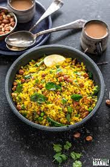

Poha, also known as pauwa, sira, chira, chivda, avil or avalakki, among many other names, is flattened rice originating from the Indian subcontinent. Rice is parboiled before flattening so that it can be consumed with very little to no cooking.
To begin with, wash the veggies, chop them and keep them aside. In the meantime, take a poha on a strainer and clean it with some water or else soak it for 5 minutes, drain the water and keep it aside.
Next, take a pan over medium flame and add in some ghee. Once the ghee melts, quickly fry the peanuts and transfer them to a bowl. Next, to the same pan, add cumin seeds along with ginger and garlic chopped, stir for a minute. Then add in onions and sauté them nicely.
Next add in all the veggies and season them with salt, pepper, red chilli powder, turmeric powder, roasted cumin powder and coriander powder. Sprinkle some water and cook the veggies with spices. Once the veggies are cooked, add in the poha and sprinkle some water. Allow it to cook and toss nicely. Serve hot with a cup of tea.